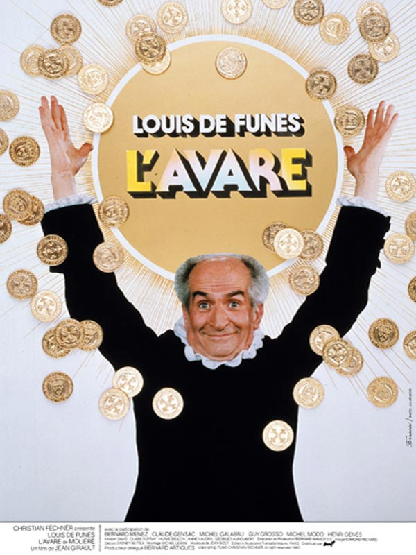
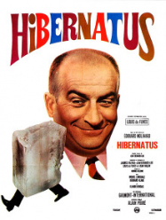

|  |
L'avareUn film pas trop mal que j'ai tourné en 1979. |
|  |
HibernatusUn film pas trop mal que j'ai tourné en 1969. |
OscarUn film pas trop mal que j'ai tourné en 1967. |
Coucou toi.
Cette page a été codée entièrement par mes soins. Je ne me suis jamais servi de l'inspect sur la Github Pages de Boris, non vraiment c'est promis.